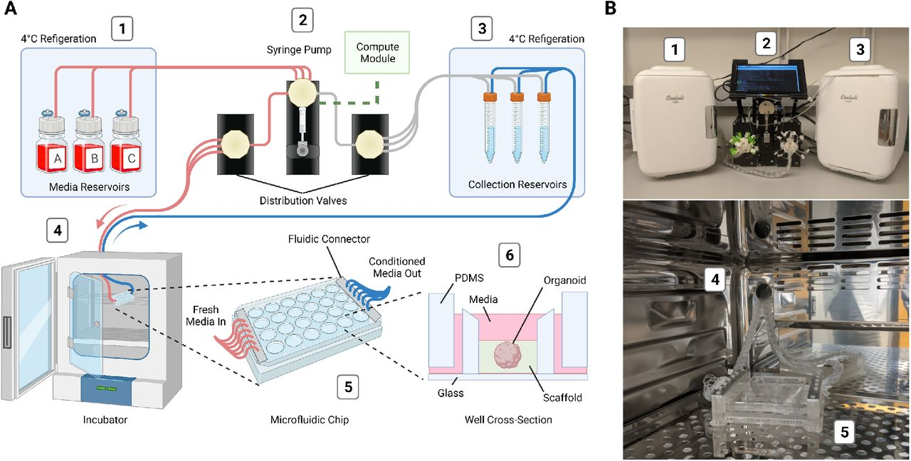
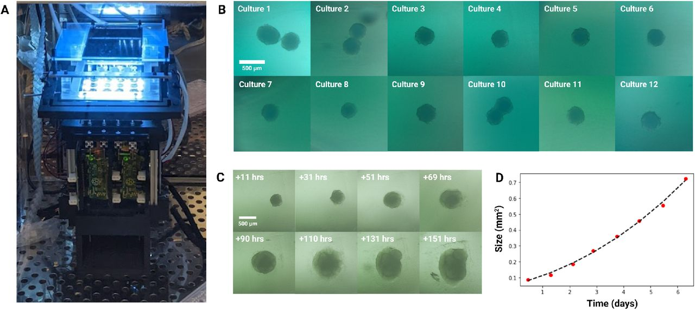
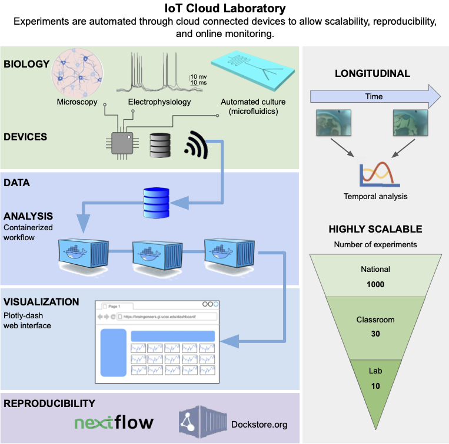
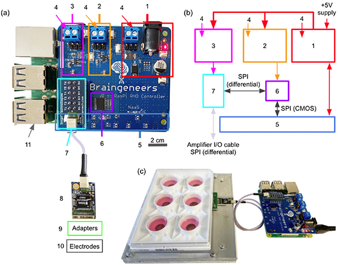
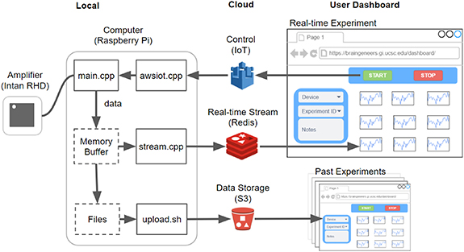
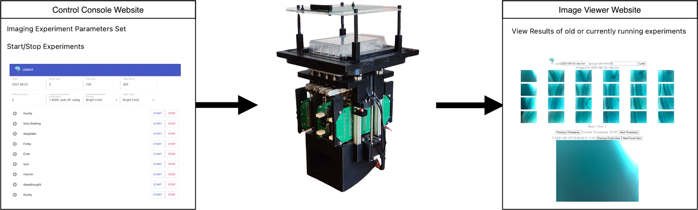
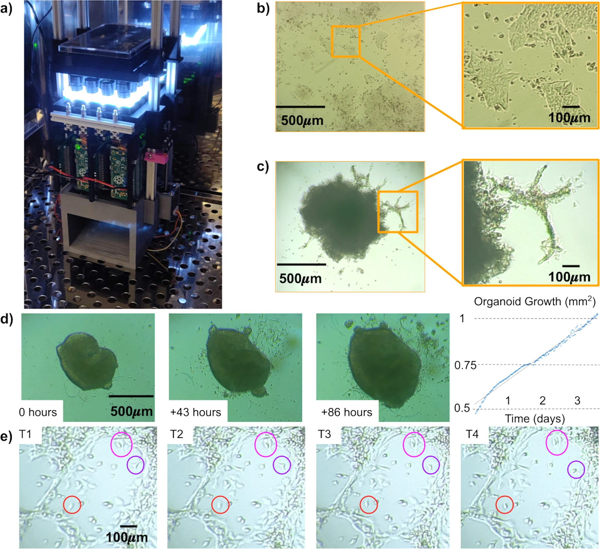
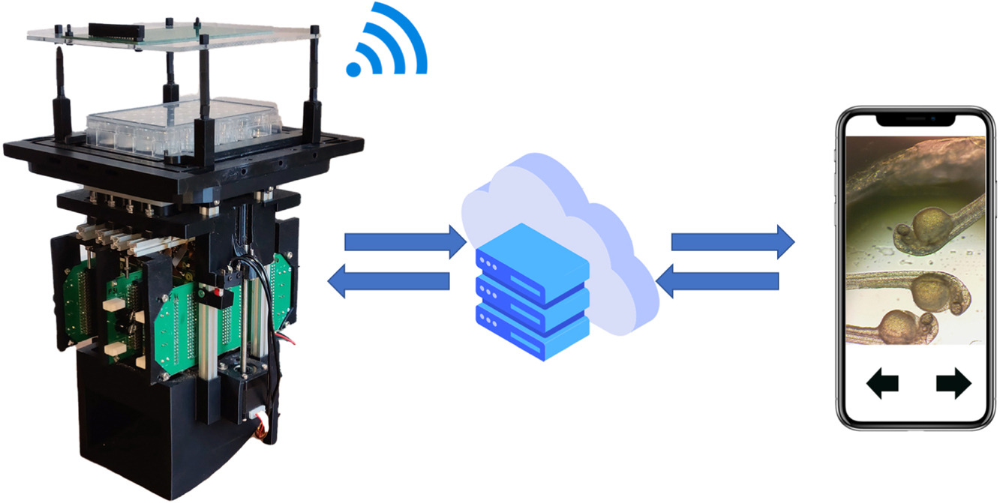
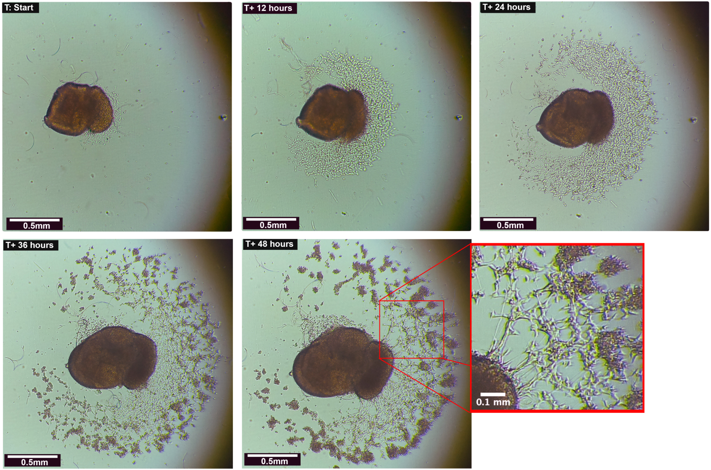

Please check our

website for additional information
Research
Seiler S.T., Mantalas G.L., Selberg J., Cordero S., Torrse-Montoya S., Baudin P.V., Ly V.T., Amend F., Tran L., Hoffman R.N., Rolandi M., Green R.E, Haussler D., Salama S.R and Teodorescu M. "Modular automated microfluidic cell culture platform reduces glycolytic stress in cerebral cortex organoids" bioRxiv
Abstract — Organ-on-a-chip systems combine microfluidics, cell biology, and tissue engineering to culture 3D organ-specific in vitro models that recapitulate the biology and physiology of their in vivo counterparts. Here, we have developed a multiplex platform that automates the culture of individual organoids in isolated microenvironments at user-defined media flow rates. Programmable workflows allow the use of multiple reagent reservoirs that may be applied to direct differentiation, study temporal variables, and grow cultures long term. Novel techniques in polydimethylsiloxane (PDMS) chip fabrication are described here that enable features on the upper and lower planes of a single PDMS substrate. RNA sequencing (RNA-seq) analysis of automated cerebral cortex organoid cultures shows benefits in reducing glycolytic and endoplasmic reticulum stress compared to conventional in vitro cell cultures.

Design and implementation of the automated, microfluidic culture platform. (A) Illustration of the automated, microfluidic organoid culture platform, the Autoculture. (B) Front view images of the Autoculture. (1) Refrigerator with reagent reservoirs. (2) Syringe pump, distribution valves, and control interface. (3) Refrigerator with conditioned media collection reservoirs. These components reside on a lab bench directly above the cell culture incubator. (4) Microfluidic tubes enter through an incubator port and connect to the (5) microfluidic well plate chip inside the incubator. (6) Cross-sectional diagram of a single well containing an organoid culture.

Longitudinal monitoring of organoid development. (A) The Autoculture microfluidic chip sits on a remote-controlled, IoT-enabled, 24-well automated imaging system. (B) Bright-field images of twelve individual 12-day-old cerebral cortex cultures at day 1 of automated feeding. (C) Longitudinal imaging of “Culture 4” during the experiment. (D) Projected area expansion of “Culture 4” during the experiment. This was obtained using a computer vision algorithm.
Parks D., Voitiuk K., Geng J., Elliott M.A.T., Keefe M.G., Jung E.A., Robbins A., Baudin P.V., Ly V.T., Hawthorne N., Yong D., Sanso S.E., Rezaee N., Sevetson J., Seiler S.T., Currie R., Hengen K.B., Nowakowski T.J., Salama S.R., Teodorescu M., Haussler D. "Internet of Things Architecture for High Throughput Biology" bioRxiv
Abstract — New cell culture techniques have led to complex tissue models in biological experiments. For example, 3-D cerebral organoids provide a more realistic model of the human cortical tissue. However, these cell culture experiments are restricted by high costs and limited labor. A massively scalable and cost efficient platform for tissue experiments would benefit genomics, neuroscience, and translational medicine by enabling advanced high throughput tissue screens. Cloud computing and the Internet of Things (IoT) provide new tools for managing multiple experiments in parallel that are remotely controlled through automation. We introduce a cloud-based IoT architecture that takes advantage of these tools to offer an environment where researchers can run thousands of cell culture experiments at once. This technology allows studies with cell cultures to be performed at scales far beyond a single lab setting, democratizing access to advanced tissue models and enabling new avenues of research.

Voituik K., Geng J., Keefe M.G., Parks D.F., Sanso S.E., Hawthorne N., Freeman D.B., Nowakowski T.J., Salama S.R., Teodorescu M., Haussler D. "Light-weight Electrophysiology Hardware and Software Platform for Cloud-Based Neural Recording Experiments." bioRxiv
Abstract — Neural activity represents a functional readout of neurons that is increasingly important to monitor in a wide range of experiments. Extracellular recordings have emerged as a powerful technique for measuring neural activity because these methods do not lead to the destruction or degradation of the cells being measured. Current approaches to electrophysiology have a low throughput of experiments due to manual supervision and expensive equipment. This bottleneck limits broader inferences that can be achieved with numerous long-term recorded samples. \textit{Approach.} We developed Piphys, an inexpensive open source neurophysiological recording platform that consists of both hardware and software. It is easily accessed and controlled via a standard web interface through Internet of Things (IoT) protocols. \textit{Main Results.} We used a Raspberry Pi as the primary processing device \suggFinal{and}{along with an} Intan bioamplifier. We designed a hardware expansion circuit board and software to enable voltage sampling and user interaction. This standalone system was validated with primary human neurons, showing reliability in collecting \suggFinal{real-time}{} neural activity \suggFinal{}{in near real-time}. \textit{Significance.} The hardware modules and cloud software allow for remote control of neural recording experiments as well as horizontal scalability, enabling long-term observations of development, organization, and neural activity at scale.

Piphys hardware components. (a) Expansion shield (blue board) attached on top of Raspberry Pi (green board). (b) Logic level connection. (c) Example interface with standard 6-well electrode plate. (1) +5 V logic, (2) +3.3 V logic, (3) +3.5 V logic, (4) external supply inputs, (5) Raspberry Pi input/output pins (bottom), (6) LVDS converter, (7) Intan RHD adapter, (8) Intan RHD 32 channel recording headstage containing Intan RHD2132 bioamplifier chip, (9) optional adapter board to electrodes, (10) multiple electrode types possible, (11) Raspberry Pi computer (bottom).

Software overview. The software that runs on the local Raspberry Pi device communicates with the Intan RHD2132 bioamplifier chip to stream and store the digitized neural signal. Concurrently, it pushes the signal to Redis for near real-time visualization on the online dashboard. Datasets are also uploaded to S3 after each recording for permanent storage and access. Experimental control such as 'start', 'stop', and variable configuration is sent from the dashboard through Amazon IoT to the local device. Past experiment data can also be browsed using records from S3.
Ly V.T, Baudin P.V., Pansodtee P, Jung E.A., Voitiuk K, Rosen Y, Willsey H.R., Mantalas G.L., Seiler S.T., Selberg J.A., Cordero S.A., Ross J.M., Rolandi M., Pollen A.A., Nowakowski T.J, Haussler D., Mostajo-Radji M.A., Salama S.R., Teodorescu M. "Development of a Low-Cost System for Simultaneous Longitudinal Biological Imaging." bioRxiv
Abstract — Simultaneous longitudinal imaging across multiple conditions and replicates has been crucial for scientific studies aiming to understand biological processes and disease. Yet, imaging systems capable of accomplishing these tasks are economically unattainable for most academic and teaching laboratories around the world. Here, we propose the Picroscope, which is the first low-cost system for simultaneous longitudinal biological imaging made primarily using off-the-shelf and 3D-printed materials. The Picroscope is compatible with standard 24-well cell culture plates and captures 3D z-stack image data. The Picroscope can be controlled remotely, allowing for automatic imaging with minimal intervention from the investigator. Here, we use this system in a range of applications. We gathered longitudinal whole organism image data for frogs, zebrafish, and planaria worms. We also gathered image data inside an incubator to observe 2D monolayers and 3D mammalian tissue culture models. Using this tool, we can measure the behavior of entire organisms or individual cells over long-time periods.

The Control Console passes commands and experiment parameters to Picroscope, which uploads results to a server allowing them to be viewed through the Image Viewer website.

(a) The Picroscope inside a standard tissue culture incubator. (b) Imaging of human embryonic stem cells as a model of 2D-monolayer cell cultures. (c) Longitudinal imaging of human cortical organoids embedded in Matrigel. Zoomed images show cellular outgrowths originating in the organoids. (d) Tracking of cortical organoid development over 86 h. Images were taken hourly. On left. Images of the tracked organoid at timepoints 0, 43, and 86. On right. Measurement of organoid area at each timepoint analyzed. (e) Manual Longitudinal tracking of individual cells in embedded cortical organoids over 40 min. Images were taken every 10 min. Magenta = example of cell division, Red = example of cell migration, and Purple = example of morphological changes.
Baudin P.V, Ly V.T, Pansodtee P, Jung E.A, Currie R, Hoffman R, Willsey H.R, Pollen A.A, Nowakowski T.J, Haussler D., Mostajo-Radji M.A., Salama S.R., Teodorescu M. "Low cost cloud based remote microscopy for biological sciences." Elsevier Internet of Things (Special Issue: IoT Toward COVID-19) (2021) arXiv preprint arXiv:2106.07419.
Abstract — A low cost remote imaging platform for biological applications was developed. The “Picroscope” is a device that allows the user to perform longitudinal imaging studies on multi-well cell culture plates. Here we present the network architecture and software used to facilitate communication between modules within the device as well as system communication with external cloud services. A web based console was created to control the device and view experiment results. Post processing tools were developed to analyze captured data in the cloud. The result is a platform for monitoring biological experiments from outside the lab.

Graphical abstract.

Human Cortical Organoid with Outgrowths: Organoids were plated on laminin coated 24 well plates and allowed to adhere to the surface. Outgrowths and cellular migration were restricted to the 2D plane of the plate’s surface and captured/monitored over the course of 21 days. Significant morphological changes occurred within the first 48 h after imaging began.